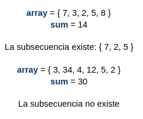
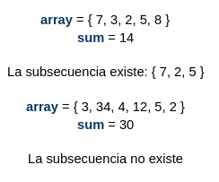
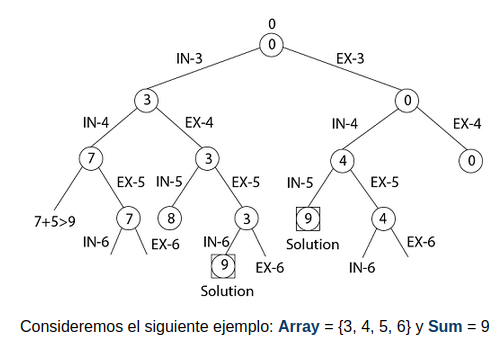

PLANTEAMIENTO DEL PROBLEMA
Dado un conjunto de números enteros no negativos y una suma de valores, determine si hay un subconjunto del conjunto dado con una suma igual a la suma dada.
Tomando de ejemplo la siguiente imagen
PROGRAMACION DINAMICA
Métodos
Dado un conjunto de números enteros no negativos y una suma de valores, determine si hay un subconjunto del conjunto dado con una suma igual a la suma dada.
Tomando de ejemplo la siguiente imagen
Se consideran 2 casos en donde cada elemento del arreglo tiene dos opciones, incluirse en el subconjunto o no. Al final se devuelve true o false dependiendo de si se encuentra el subconjunto o no. El caso base para este problema será cuando la suma devuelva un número negativo o cuando no queden elementos en el arreglo. Cuando la suma sea 0, devuelve True.
Este problema se caracteriza por tener un orden de complejidad exponencial O(2^n), es un problema que prueba todos los subconjuntos del conjunto dado el peor caso. Es un problema de tipo NP-Complete (No se conoce una solución de tiempo polinomial para este problema)
Recordamos algunos algoritmos que cumplen con la característica de tiempo polinomial: Binary Search O(logn), Linear Search O(n), Merge Sort O(nlogn), Matrix Multiplication O(n^3).
Un algoritmo se considera NP-Complete cuando:
Mediante la implementación recursiva se presentan sub problemas que se resuelven una y otra vez, por lo que se considera que el problema presenta una estructura superpuesta (subproblemas superpuestos) y que puede solucionarse mediante memoización o tabulación.
Los dos métodos de DP son:
NOTA: Para ver el funcionamiento de cada algoritmo, vaya al inicio de el sitio y presione en el método que desea ver